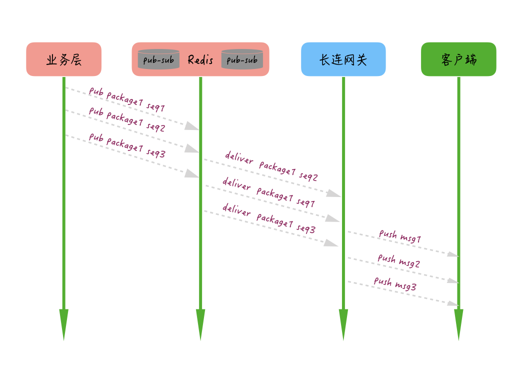

- 00 开篇词 搞懂“实时交互”的IM技术，将会有什么新机遇？.md.html
- 01 架构与特性：一个完整的IM系统是怎样的？.md.html
- 02 消息收发架构：为你的App，加上实时通信功能.md.html
- 03 轮询与长连接：如何解决消息的实时到达问题？.md.html
- 04 ACK机制：如何保证消息的可靠投递？.md.html
- 05 消息序号生成器：如何保证你的消息不会乱序？.md.html
- 06 HttpDNS和TLS：你的消息聊天真的安全吗？.md.html
- 07 分布式锁和原子性：你看到的未读消息提醒是真的吗？.md.html
- 08 智能心跳机制：解决网络的不确定性.md.html
- 09 分布式一致性：让你的消息支持多终端漫游.md.html
- 10 自动智能扩缩容：直播互动场景中峰值流量的应对.md.html
- 11 期中实战：动手写一个简易版的IM系统.md.html
- 12 服务高可用：保证核心链路稳定性的流控和熔断机制.md.html
- 13 HTTP Tunnel：复杂网络下消息通道高可用设计的思考.md.html
- 14 分片上传：如何让你的图片、音视频消息发送得更快？.md.html
- 15 CDN加速：如何让你的图片、视频、语音消息浏览播放不卡？.md.html
- 16 APNs：聊一聊第三方系统级消息通道的事.md.html
- 17 Cache：多级缓存架构在消息系统中的应用.md.html
- 18 Docker容器化：说一说IM系统中模块水平扩展的实现.md.html
- 19 端到端Trace：消息收发链路的监控体系搭建.md.html
- 20 存储和并发：万人群聊系统设计中的几个难点.md.html
- 21 期末实战：为你的简约版IM系统，加上功能.md.html
- 22 答疑解惑：不同即时消息场景下架构实现上的异同.md.html
- 结束语 真正的高贵，不是优于别人，而是优于过去的自己.md.html
- 捐赠
05 消息序号生成器：如何保证你的消息不会乱序？
你好，我是袁武林。
前面几节课，我们较为系统地介绍了如何解决消息实时到达的问题，也对保证消息可靠投递实战中常用的方式进行了一一讲解。
那么，今天的课程我们继续一起聊一聊，IM系统设计中另一个比较复杂，但又非常重要的话题：消息收发的一致性。需要提醒的是，我们这里的讲到的一致性，一般来说是指消息的时序一致性。
为什么消息的时序一致性很重要？
对于聊天、直播互动等业务来说，消息的时序代表的是发送方的意见表述和接收方的语义逻辑理解，如果时序一致性不能保证，可能就会造成聊天语义不连贯、容易出现曲解和误会。
你可以想象一下，一个人说话颠三倒四，前言不搭后语的样子，就理解我们为什么要尤其注重消息的时序一致性了。
对于点对点的聊天场景，时序一致性需要保证接收方的接收顺序和发送方的发出顺序一致；而对于群组聊天，时序一致性保证的是群里所有接收人看到的消息展现顺序都一样。
为什么保证消息的时序一致性很困难？
从理论上来说，保持消息的时序一致性貌似并不难。理论上，我们想象的消息收发场景中，只有单一的发送方、单一的接收方。
如果发送方和接收方的消息收发都是单线程操作，并且和IM服务端都只有唯一的一个TCP连接，来进行消息传输，IM服务端也只有一个线程来处理消息接收和消息推送。这种场景下，消息的时序一致性是比较容易能得到保障的。
但在实际的后端工程实现上，由于单发送方、单接收方、单处理线程的模型吞吐量和效率都太低，基本上不太可能存在。
更多的场景下，我们可能需要面对的是多发送方、多接收方、服务端多线程并发处理的情况。所以，知道了难点，我们再来看一看究竟在后端的工程实现上，保证消息的时序一致都存在哪些难点。
消息的时序一致性其实是要求我们的消息具备“时序可比较性”，也就是消息相对某一个共同的“时序基准”可以来进行比较，所以，要保证消息的时序一致性的一个关键问题是：我们是否能找到这么一个时序基准，使得我们的消息具备“时序可比较性”。
在工程实现上，我们可以分成这样几步。
- 首先是：如何找到时序基准。
- 其次是：时序基准的可用性问题。
- 最后是：有了时序基准，还有其他的误差吗，有什么办法可以减少这些误差？
如何找到时序基准？
下面我从消息收发的实际场景来分析一下，收发过程中如何找到一个全局的“时序基准”。在这里，我们来逐一分析一下。
首先，我们来看看发送方的本地序号和本地时钟是否可以作为“时序基准”？
这里解释一下，所谓发送方的本地序号和本地时钟是指发送方在发送消息时连同消息再携带一个本地的时间戳或者本地维护的一个序号给到IM服务端，IM服务端再把这个时间戳或者序号和消息一起发送给消息接收方，消息接收方根据这个时间戳或者序号来进行消息的排序。
仔细分析一下，貌似发送方的本地序号或者本地时钟不适合用来作为接收方排序的“时序基准”，原因有下面几点。
发送方时钟存在较大不稳定因素，用户可以随时调整时钟导致序号回退等问题。
发送方本地序号如果重装应用会导致序号清零，也会导致序号回退的问题。
类似“群聊消息”和“单用户的多点登录”这种多发送方场景，都存在：同一时钟的某一时间点，都可能有多条消息发给同一接收对象。比如同一个群里，多个人同时发言；或者同一个用户登录两台设备，两台设备同时给某一接收方发消息。多设备间由于存在时钟不同步的问题，并不能保证设备带上来的时间是准确的，可能存在群里的用户A先发言，B后发言，但由于用户A的手机时钟比用户B的慢了半分钟，如果以这个时间作为“时序基准”来进行排序，可能反而导致用户A的发言被认为是晚于用户B的。
因此以发送方的本地时钟或者本地序号作为“时序基准”是不可靠的。那么，我们接下来看看IM服务器的本地时钟是否可以作为“时序基准”？
这里也解释一下，IM服务器的本地时钟作为“时序基准”是指：发送方把消息提交给IM服务器后，IM服务器依据自身服务器的时钟生成一个时间戳，再把消息推送给接收方时携带这个时间戳，接收方依据这个时间戳来进行消息的排序。
我们分析一下，好像IM服务器的本地时钟作为接收方消息排序的“时序基准”也不太合适。
因为，在实际工程中，IM服务都是集群化部署，集群化部署也就是许多服务器同时部署任务。
虽然多台服务器通过NTP时间同步服务，能降低服务集群机器间的时钟差异到毫秒级别，但仍然还是存在一定的时钟误差，而且IM服务器规模相对比较大，时钟的统一性维护上也比较有挑战，整体时钟很难保持极低误差，因此一般也不能用IM服务器的本地时钟来作为消息的“时序基准”。
既然单机本地化的时钟或者序号都存在问题，那么如果有一个全局的时钟或者序号是不是就能解决这个问题了呢？所有的消息的排序都依托于这个全局的序号，这样就不存在时钟不同步的问题了。那么最后，我们来看看IM服务端的全局序列是否可以作为“时序基准”？
比如说如果有一个全局递增的序号生成器，应该就能避免多服务器时钟不同步的问题了，IM服务端就能通过这个序号生成器发出的序号，来作为消息排序的“时序基准”。
而且这种“全局序号生成器”可以通过多种方式来实现，常见的比如Redis的原子自增命令incr，DB自带的自增id，或者类似Twitter的snowflake算法、“时间相关”的分布式序号生成服务等。
“时序基准”的可用性问题
使用“全局序号生成器”发出的序号，来作为消息排序的“时序基准”，能解决每一条消息没有标准“生产日期”的问题。但如果是面向高并发和需要保证高可用的场景，还需要考虑这个“全局序号生成器”的可用性问题。
首先，类似Redis的原子自增和DB的自增id，都要求在主库上来执行“取号”操作，而主库基本都是单点部署，在可用性上的保障会相对较差，另外，针对高并发的取号操作这个单点的主库可能容易出现性能瓶颈。
而采用类似snowflake算法的时间相关的分布式“序号生成器”，虽然在发号性能上一般问题不大，但也存在一些问题。
一个是发出的号携带的时间精度有限，一般能到秒级或者毫秒级，比如微博的ID生成器就是精确到秒级的，另外由于这种服务大多都是集群化部署，携带的时间采用的服务器时间，也存在时钟不一致的问题（虽然时钟同步上比控制大量的IM服务器也相对容易一些）。
由上可知，基于“全局序号生成器”仍然存在不少问题，那这样是不是说基于“全局序号生成器”生成的序号来对消息进行排序的做法不可行呢？
我们从后端业务实现的角度，来具体分析一下。
从业务层面考虑，对于群聊和多点登录这种场景，没有必要保证全局的跨多个群的绝对时序性，只需要保证某一个群的消息有序即可。
这样的话，如果可以针对每一个群有独立一个“ID生成器”，能通过哈希规则把压力分散到多个主库实例上，大量降低多群共用一个“ID生成器”的并发压力。
对于大部分即时消息业务来说，产品层面可以接受消息时序上存在一定的细微误差，比如同一秒收到同一个群的多条消息，业务上是可以接受这一秒的多条消息，未严格按照“接收时的顺序”来排序的，实际上，这种细微误差对于用户来说，基本也是无感知的。
那么，对于依赖“分布式的时间相关的ID生成器”生成的序号来进行排序，如果时间精度业务上可以接受也是没问题的。
从之前微信对外的分享，我们可以了解到：微信的聊天和朋友圈的消息时序也是通过一个“递增”的版本号服务来进行实现的。不过这个版本号是每个用户独立空间的，保证递增，不保证连续。
微博的消息箱则是依赖“分布式的时间相关的ID生成器”来对私信、群聊等业务进行排序，目前的精度能保证秒间有序。
“时序基准”之外的其他误差
有了“时序基准”，是不是就能确保消息能按照“既定顺序”到达接收方呢？答案是并不一定能做到。原因在于下面两点。
IM服务器都是集群化部署，每台服务器的机器性能存在差异，因此处理效率有差别，并不能保证先到的消息一定可以先推送到接收方，比如有的服务器处理得慢，或者刚好碰到一次GC，导致它接收的更早消息，反而比其他处理更快的机器更晚推送出去。
IM服务端接收到发送方的消息后，之后相应的处理一般都是多线程进行处理的，比如“取序号”“暂存消息”“查询接收方连接信息”等，由于多线程处理流程，并不能保证先取到序号的消息能先到达接收方，这样的话对于多个接收方看到的消息顺序可能是不一致的。
所以一般还需要端上能支持对消息的“本地整流”。我们来看一下本地整流。
消息服务端包内整流
虽然大部分情况下，聊天、直播互动等即时消息业务能接受“小误差的消息乱序”，但某些特定场景下，可能需要IM服务能保证绝对的时序。
比如发送方的某一个行为同时触发了多条消息，而且这多条消息在业务层面需要严格按照触发的时序来投递。
一个例子：用户A给用户B发送最后一条分手消息同时勾上了“取关对方”的选项，这个时候可能会同时产生“发消息”和“取关”两条消息，如果服务端处理时，把“取关”这条信令消息先做了处理，就可能导致那条“发出的消息”由于“取关”了，发送失败的情况。
对于这种情况，我们一般可以调整实现方式，在发送方对多个请求进行业务层合并，多条消息合并成一条；也可以让发送方通过单发送线程和单TCP连接能保证两条消息有序到达。
但即使IM服务端接收时有序，由于多线程处理的原因，真正处理或者下推时还是可能出现时序错乱的问题，解决这种“需要保证多条消息绝对有序性”可以通过IM服务端包内整流来实现。
比如：我们在实现离线推送时，在网关机启动后会自动订阅一个本IP的Topic，当用户上线时，网关机会告知业务层用户有上线操作，这时业务层会把这个用户的多条离线消息pub给这个用户连接的那个网关机订阅的Topic，当网关机收到这些消息后，再通过长连接推送给用户，整个过程大概是下图这样的。-

但是很多时候会出现Redis队列组件的Sharding和网关机多线程消费处理导致乱序的情况，这样，如果一些信令（比如删除所有会话）的操作被乱序推送给客户端，可能就会造成端上的逻辑错误。
然后再说一下离线推送服务端整流的过程：

- 首先，生产者为每个消息包生成一个packageID，为包内的每条消息加个有序自增的seqId。
- 其次，消费者根据每条消息的packageID和seqID进行整流，最终执行模块只有在一定超时时间内完整有序地收到所有消息才执行最终操作，否则将根据业务需要触发重试或者直接放弃操作。通过服务端整流，服务端包内整流大概就是图中这个样子，我们要做的是在最终服务器取到TCP连接后下推的时候，根据包的ID，对一定时间内的消息做一个整流和排序，这样即使服务端处理多条消息时出现乱序，仍然可以在最终推送给客户端时整流为有序的。
消息接收端整流
携带不同序号的消息到达接收端后，可能会出现“先产生的消息后到”“后产生的消息先到”等问题，消息接收端的整流就是解决这样的一个问题的。
消息客户端本地整流的方式可以根据具体业务的特点来实现，目前业界比较常见的实现方式比较简单，步骤如下：
下推消息时，连同消息和序号一起推送给接收方；
接收方收到消息后进行判定，如果当前消息序号大于前一条消息的序号就将当前消息追加在会话里；
否则继续往前查找倒数第二条、第三条等，一直查找到恰好小于当前推送消息的那条消息，然后插入在其后展示。
小结
今天我们讲到了在多发送方、多接收方、服务端多线程并发处理的情况下，保持消息时序一致的重要性及处理方法。
对于聊天、直播互动等即时消息的场景，保持消息的时序一致性能避免发送方的意见表述和接收方的语义理解出现偏差的情况。
对于如何保持消息的时序一致性的关键点在于需要找到一个时序基准来标识每一条消息的顺序。这个时序基准可以通过全局的序号生成器来确定，常见的实现方式包括支持单调自增序号的资源生成，或者分布式时间相关的ID生成服务生成，两种方式各有一些限制，不过，你都可以根据业务自身的特征来进行选择。
有了通过时序基准确定的消息序号，由于IM服务器差异和多线程处理的方式，不能保证先服务端的消息一定能先推到接收方，可以通过“服务端包内整流”机制来保证需要“严格有序”的批量消息的正确执行，或者接收方根据消息序号来进行消息本地整流，从而确保多接收方的最终一致性。
最后给你留一道思考题。在即时消息收发场景中，用于保证消息接收时序的序号生成器为什么可以不是全局递增的？
以上就是今天课程的内容，欢迎你给我留言，我们可以在留言区一起讨论。感谢你的收听，我们下期再见。
© 2019 - 2023 Liangliang Lee. Powered by gin and hexo-theme-book.